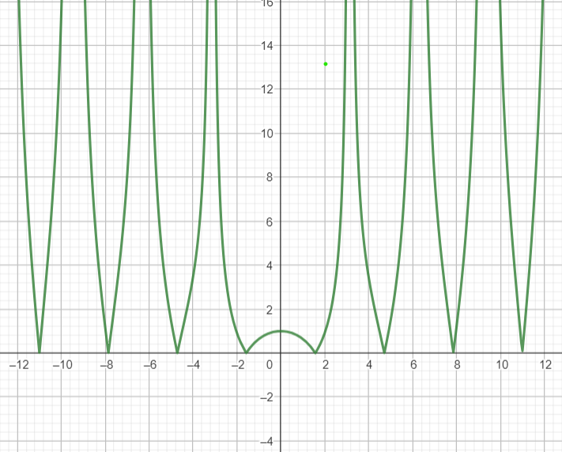

Łukasz Kluza, 05.03.2024
„Laboratorium” 01
Zadanie 1.
Znaleźć "maszynowe epsilon", czyli najmniejszą liczbę a, taką że a+1>1
Zadanie 2.
Rozważamy problem ewaluacji funkcji sin(x), m.in. propagację błędu danych wejściowych, tj. błąd wartości funkcji ze względu na zakłócenie h w argumencie x:
Ocenić błąd bezwzględny przy ewaluacji sin(x)
Ocenić błąd względny przy ewaluacji sin(x)
Ocenić uwarunkowanie dla tego problemu
Dla jakich wartości argumentu x problem jest bardzo czuły ?
Zadanie 3.
Funkcja sinus zadana jest nieskończonym ciągiem
Jakie są błędy progresywny i wsteczny jeśli przybliżamy funkcję sinus biorąc tylko pierwszy człon rozwinięcią, tj. , dla x = 0.1, 0.5 i 1.0 ?
Jakie są błędy progresywny i wsteczny jeśli przybliżamy funkcję sinus biorąc pierwsze dwa człony rozwinięcią, tj. , dla x = 0.1, 0.5 i 1.0 ?
Zadanie 4.
Zakładamy że mamy znormalizowany system zmiennoprzecinkowy z β = 10, p = 3, L = -98
Jaka jest wartość poziomu UFL (underflow) dla takiego systemu ?
Jeśli x = 6.87 x 10^(-97) i y = 6.81 x 10^(-97), jaki jest wynik operacji x – y ?
Zadanie 1.
Aby wyznaczyć maszynowe epsilon wystarczy zauważyć że musi on mieć taki sam wykładnik jak liczba oraz jak najmniejszą mantysę, też równą .
Dla typu double, który ma 53 bity na mantysę, możemy to oszacować na
. Jednak, ponieważ w standardzie IEEE 754 pierwszy bit mantysy zawsze jest równy 1, więc w naszym przypadku maszynowy epsilon wyniesie: .
Dla przykładu w języku programowanie python łatwo możemy sprawdzć ile wynosi "maszynowe epsilon" użwyając wbudwoanych fuknkcji:
print(sys.float_info.epsilon)
#2.220446049250313e-16
Lub możemy też zdefiniować własną funkcję:
def show_info():
number = 1.0
ONE = 1.0
while number + ONE > ONE:
epsilon = number
number /= 2
print(f'Maszynowy epsilon: {epsilon}')
show_info()
# Maszynowy epsilon: 2.220446049250313e-16
Jak widać powyższe wyniki uzyskane algebraicznie oraz numerycznie się pokrywają.
Zadanie 2.

Problem jest najlepiej uwarunkowany w miejscach kiedy funkcja się zeruje, czyli .
Natomiast problen ten jest czuły (tj. najgorzej uwarunkowany), kiedy ta funkja ( ) zmierza do nieskończoności, a wiec dla
Zadanie 3.
Badanie własności funkcji sin(x) wyprowadzonej za pomocą wzoru Taylora
Wzory:
y = f(x), gdzie
Błąd progresywny:
Błąd wsteczny:
Błąd progresywny:
Błąd wsteczny:
| Wyniki/Dane | Błąd progresywny | Błąd wsteczny | |||
|---|---|---|---|---|---|
| x=0.1 | 0.1 | 0.0998334 | 0.0001666 | 0.0001674 | |
| x=0.5 | 0.5 | 0.4794255 | 0.0205745 | 0.0235987 | |
| x=1.0 | 1.0 | 0.8414709 | 0.1585291 | 0.5707963 |
Błąd progresywny:
Błąd wsteczny:
| Wyniki/Dane | Błąd progresywny | Błąd wsteczny | |||
|---|---|---|---|---|---|
| x=0.1 | 0.0998333 | 0.0998334 | 0.0000001 | 0.0000002 | |
| x=0.5 | 0.4791666 | 0.4794255 | 0.0002589 | 0.0002951 | |
| x=1.0 | 0.8333333 | 0.8414709 | 0.0081376 | 0.0148893 |
Zadanie 4.
Dane: Znormalizowany system zmienno przecinowy z:
, czyli:
Ponieważ wartość takiej jest mniejsza niż wartość UFL, więc wynik będzie równy 0.
Analizując powyższe, bardzo łatwo można zauważyć, że w informatyce konieczne jest zachowanie szczególnej ostrożności podczas operacji na liczbach zmiennoprzecinkowych. Te liczby generują wiele problemów, zwłaszcza gdy są używane do reprezentowania bardzo małych wartości lub gdy odejmujemy od siebie dwie bardzo bliskie sobie liczby.
Jednym z głównych problemów jest utrata precyzji, która może wystąpić przy operacjach arytmetycznych na liczbach zmiennoprzecinkowych. Na przykład, gdy dodajemy do siebie bardzo małą wartość do bardzo dużej, wynik może być zaokrąglany do wartości większej niż oczekiwano, co prowadzi do błędnego wyniku.
Aby uniknąć tych problemów, należy brać pod uwagę kilka kwestii:
Unikanie operacji na liczbach o zbliżonych wartościach: W miarę możliwości, należy unikać odejmowania dwóch bardzo bliskich siebie liczb zmiennoprzecinkowych, ponieważ może to prowadzić do utraty precyzji.
Używanie większej precyzji: W niektórych przypadkach, zwłaszcza gdy operujemy na bardzo małych lub bardzo dużych wartościach, korzystanie z większej precyzji zmiennoprzecinkowej może pomóc uniknąć problemów związanych z utratą precyzji.
Dbanie o te kwestie pomoże nam uniknąc wielu problemów związanych z operacjami na liczbach zmiennoprzecinkowych i zapewni dokładnejsze i wiarygodniejsze wyniki obliczeń.